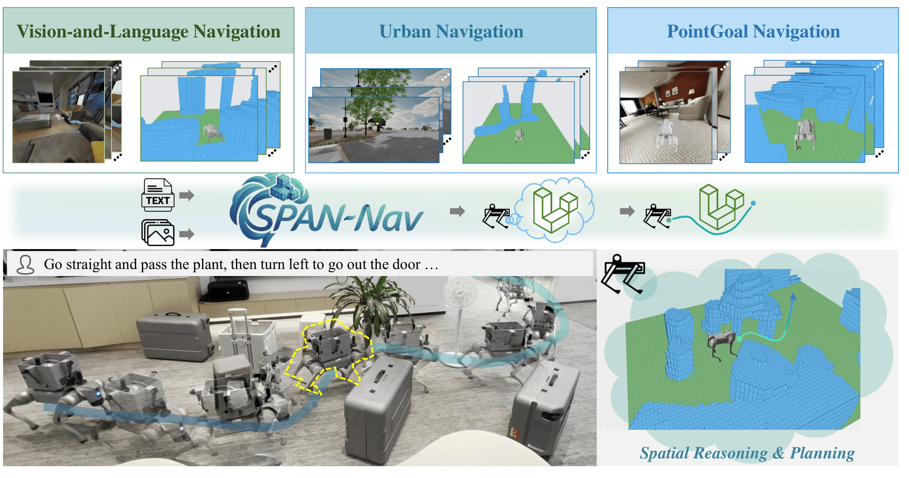
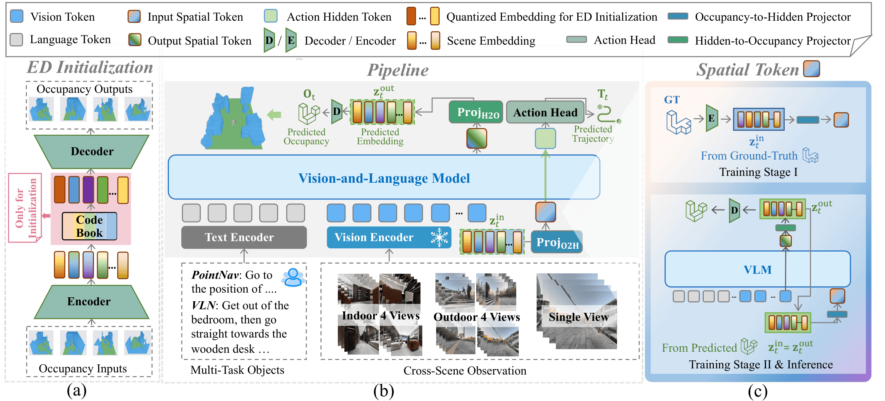
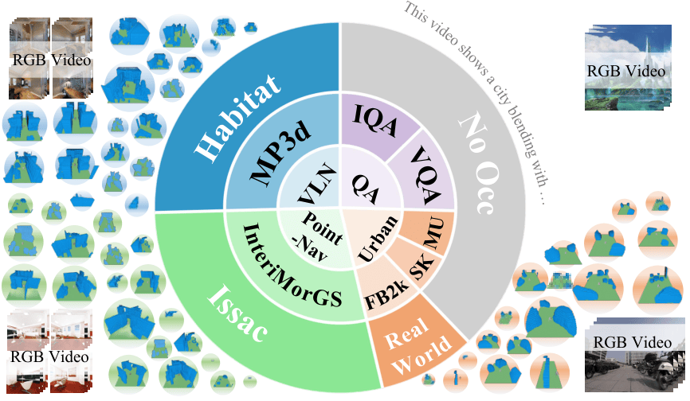
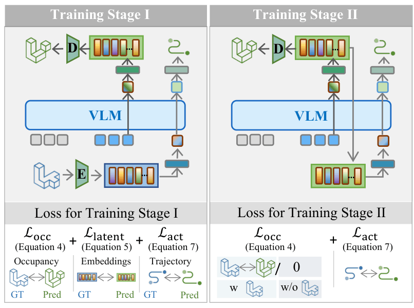

Universal 3D Awareness
Injects explicit spatial priors into action reasoning from RGB-only observations.

Recent embodied navigation approaches leveraging Vision-Language Models (VLMs) demonstrate strong generalization in versatile Vision-Language Navigation (VLN). However, reliable path planning in complex environments remains challenging due to insufficient spatial awareness. In this work, we introduce SPAN-Nav, an end-to-end foundation model designed to infuse embodied navigation with universal 3D spatial awareness using RGB video streams. SPAN-Nav extracts spatial priors across diverse scenes through an occupancy prediction task on extensive indoor and outdoor environments. To mitigate the computational burden, we introduce a compact representation for spatial priors, finding that a single token is sufficient to encapsulate the coarse-grained cues essential for navigation tasks. Furthermore, inspired by the Chain-of-Thought (CoT) mechanism, SPAN-Nav utilizes this single spatial token to explicitly inject spatial cues into action reasoning through an end-to-end framework. Leveraging multi-task co-training, SPAN-Nav captures task-adaptive cues from generalized spatial priors, enabling robust spatial awareness to generalize even to the task lacking explicit spatial supervision. To support comprehensive spatial learning, we present a massive dataset of 4.2 million occupancy annotations that covers both indoor and outdoor scenes across multi-type navigation tasks. SPAN-Nav achieves state-of-the-art performance across three benchmarks spanning diverse scenarios and varied navigation tasks. Finally, real-world experiments validate the robust generalization and practical reliability of our approach across complex physical scenarios.
Project summary video.
Injects explicit spatial priors into action reasoning from RGB-only observations.
Single-token representation preserves key geometry cues while keeping inference efficient.
4.2M occupancy annotations from diverse indoor/outdoor and multi-task navigation sources.
+5.3% SR on VLN-RxR, 4× lower cumulative cost on MetaUrban, +30.9% SR on InternScenes.
SPAN-Nav extends a VLM backbone with occupancy-aligned latent learning and spatial chain-of-thought action planning.

Train with occupancy, latent, and trajectory supervision using ground-truth occupancy tokens.
Switch to self-predicted spatial tokens to close the gap between training and deployment.
We jointly present the cross-scene occupancy dataset and the corresponding optimization objectives. The dataset spans VLN, PointGoal, and Urban Navigation across indoor/outdoor and simulation/real-world scenes; the training objective combines occupancy reconstruction, latent consistency, action supervision, and QA losses in a unified co-training pipeline.


@misc{liu2026spannavgeneralizedspatialawareness,
title={SPAN-Nav: Generalized Spatial Awareness for Versatile Vision-Language Navigation},
author={Jiahang Liu and Tianyu Xu and Jiawei Chen and Lu Yue and Jiazhao Zhang and Zhiyong Wang and Minghan Li and Qisheng Zhao and Anqi Li and Qi Su and Zhizheng Zhang and He Wang},
year={2026},
eprint={2603.09163},
archivePrefix={arXiv},
primaryClass={cs.RO},
url={https://arxiv.org/abs/2603.09163},
}